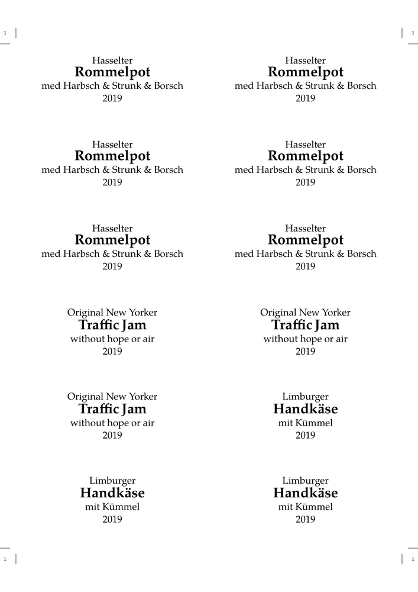
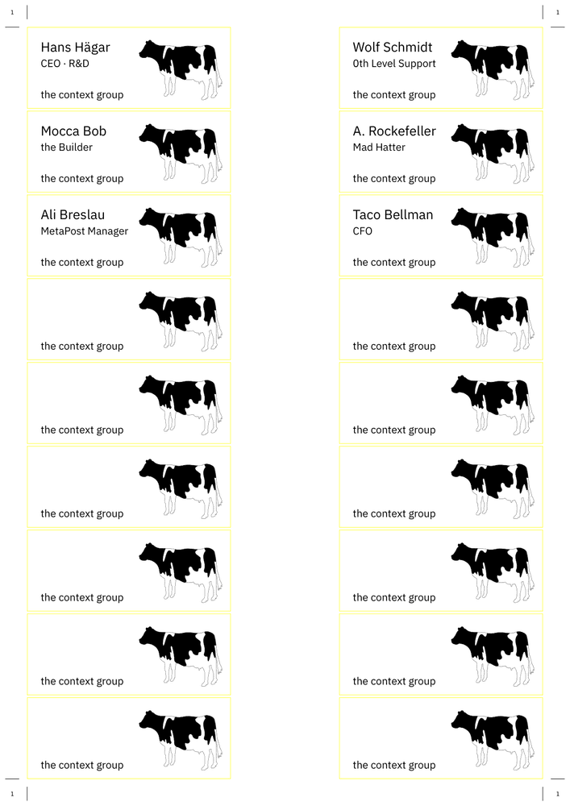

< Document layout and layers/Imposition#XY_schema >
Sticky labels for jam or whatever. Adapt to your sticker sheets...
-
\setupbodyfont [palatino,rm,14pt] \setupinterlinespace[18pt] \definepapersize[Label][width=97mm,height=42.3mm] % size of one label \setuppapersize[Label][A4] \setuppaper[ nx=2, % number of columns ny=6, % number of rows topspace=2.2cm, % from top to first sticker backspace=0.8cm, % from left to sticker %dx=0mm,dy=0mm, % distance between stickers ] % must come before \setuparranging! \setuparranging [XY] \setuplayout[ location=middle, marking=on, topspace=5mm, % within label backspace=5mm, % within label width=87mm, % label width minus border header=0mm, footer=0mm, align=middle, ] \setuppagenumbering[state=stop] \starttext \startlines\startalignment[middle] \dorecurse{6}{ Hasselter {\bfb Rommelpot} med Harbsch & Strunk & Borsch 2019 \page} \dorecurse{3}{ Original New Yorker {\bfb Traffic Jam} without hope or air 2019 \page} \dorecurse{3}{ Limburger {\bfb Handkäse} mit Kümmel 2019 \page} \stopalignment\stoplines \stoptext
- 
This is a real life example of name tags:
-
\newdimen\LWidth \newdimen\LHeight \newdimen\LDistanceX \newdimen\LDistanceY \LWidth=75mm \LHeight=30mm \LDistanceX=0mm \LDistanceY=0mm \define[1]\Name{{\switchtobodyfont[14pt]#1}} \define[1]\Title{#1} \mainlanguage[de] \usetypescriptfile [plex] \setupbodyfont [ibmplex,ss,11pt] \setupinterlinespace[16pt] \useMPlibrary[dum] \useexternalfigure[logo][cow][size=art] \definepapersize[Label][width=\LWidth,height=\LHeight] \setuppapersize[Label][A4] \setuppaper[ nx=2, ny=9, topspace=1cm, backspace=1cm, %dx=\LDistanceX, %dy=\LDistanceY, ] % must come before \setuparranging! \setuparranging [XY] \setuplayout[ location=middle, marking=on, topspace=5mm, backspace=5mm, width=68mm, header=0mm, footer=0mm, ] \setuppagenumbering[state=stop] \definelayer[BG][ x=0mm,y=0mm, width=\LWidth,height=\LHeight, state=repeat] \setupbackgrounds[page][background=BG,] \setlayerframed[BG][ frame=on, framecolor=yellow, width=\LWidth,height=\LHeight, align=flushleft, ]{\strut} \setlayer[BG][ preset=rightbottom, hoffset=3mm, voffset=3mm]{% \externalfigure[logo][height=0.75\LHeight]} \setlayer[BG][ preset=leftbottom, hoffset=5mm, voffset=3mm]{% the context group} \starttext \startlines \Name{Hans Hägar} \Title{CEO · R&D} \page \Name{Wolf Schmidt} \Title{0th Level Support} \page \Name{Mocca Bob} \Title{the Builder} \page \Name{A. Rockefeller} \Title{Mad Hatter} \page \Name{Ali Breslau} \Title{MetaPost Manager} \page \Name{Taco Bellman} \Title{CFO} \page \stoplines \stoptext
- 